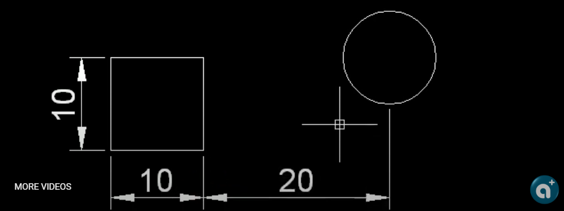
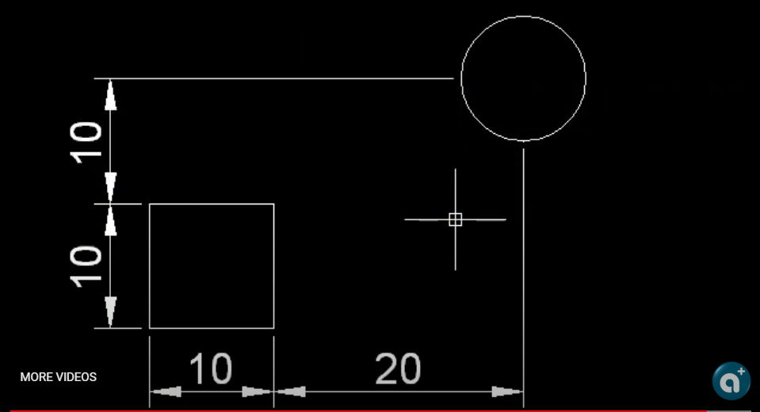
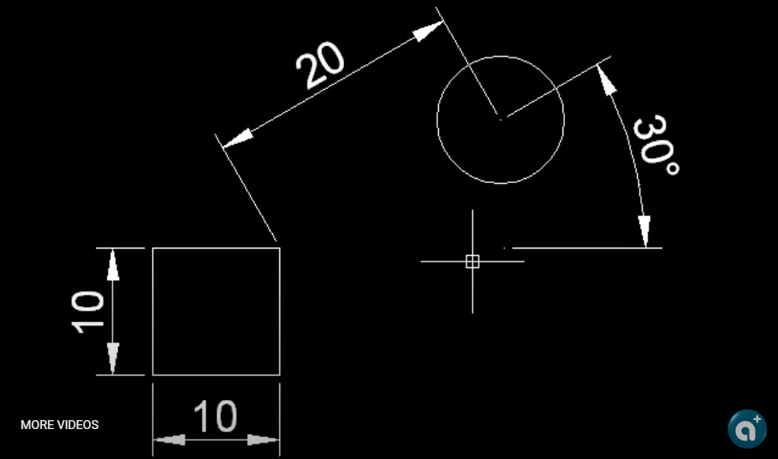

範例一:

範例二:

範例三:

請問你會使用什麼方法，完成圖片中的紅色圓物件呢!!方法有很多種，建議你可以先想想看喔~
請先回帖說明自己會使用的方式，然後再來看我所提供的方法，這考驗你對AutoCAD的了解程度，藉此機會可以明白有很多路徑(方法)可以到達目的地，希望成員們多多提供及加入討論~
一、AutoCAD TT暫時追蹤點
透過直接距離輸入暫時追蹤點，您可以快速指定一個相對於最後一個輸入點的點。在任何要求定位一個點的提示下，您可以先移動游標以指定方向，然後輸入一個表示距離的數值。
二、AutoCAD TK暫時追蹤點
追蹤指定一系列暫時點，每個點相對於前一個點偏移。這樣從幾個方向與距離指定新點的位置。若要決定每個暫時點的位置，您可以使用直接距離輸入。首先移動游標，指定方向，然後輸入數字距離。
另外，透過組合兩個指定點的 X 與 Y 值，追蹤可以建立新點。您可以根據第一點後的游標方向，以任意順序指定這兩點。直接距離輸入指定游標目前位置方向上的距離。座標篩選將不同點的 X、Y 與 Z 的值組合成單一點。相對座標輸入是相對於上次輸入的點，來尋找點。
三、AutoCAD FROM參考點偏移
在提示定位點時，請輸入 from，然後輸入一個暫時參考點或暫時基準點，您可以相對於此點指定一個偏移量來定位下一個點。輸入該基準點的偏移位置作為相對座標，或者使用直接距離輸入。
*看完影片請回覆，告訴大家影片中哪幾個方法你已經會使用喔*
資料參考:AutoCAD說明
延伸閱讀：[練習]繪圖小技巧1